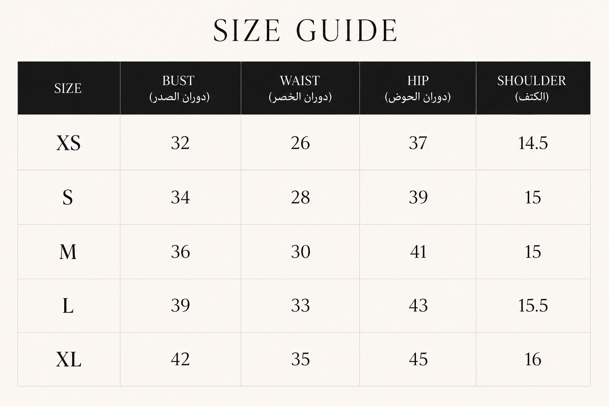

← Collection
Fit & Measurements
Size Guide
MARA abayas are sized two ways — by length (50–60, measured from shoulder to hem) and by width (XS–XL). Choose the length for the intended drape, and the width from the measurements below.
Width · XS–XL

Length · 50–60
Lengths run from 50 to 60, measured from shoulder to hem. As a guide: petite heights suit 50–53, average heights 54–57, and taller heights 58–60.
Between two sizes, or after made-to-measure? Every MARA piece can be customised to your size — message us on WhatsApp and we’ll take your measurements personally.
Ask about sizing